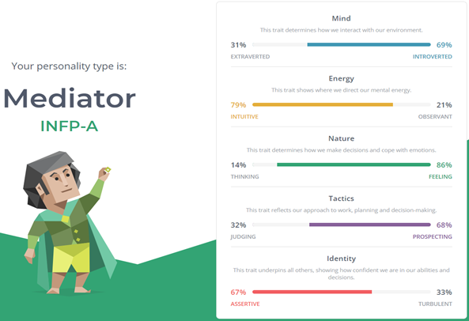

Myers-Briggs Test
Learning Style Test

Emotional Intelligence Test

What do the results of these tests mean for you?
I feel the Myers-Briggs test outlines my personality accurately, picking up on how often I think with my heart instead of my head and how I tend to pick up on the feelings and emotions of others intuitively. To me this means that my personality is a balanced one, being able to empathise with and get along well with others.
The learning style test results are unsurprising to me. As I’ve previously mentioned, my currently unmedicated (until January!) ADHD makes learning through written information quite difficult. Having access to visual, auditory and physical tools makes my academic life much easier.
I wasn’t sure what to expect from an emotional intelligence test, but the questions provided some thought-provoking situations. Most questions were very relatable and through answering honestly it shed some light on how I perhaps could have handled certain situations better.
How do you think these results may influence your behaviour in a team?
I would almost certainly interact differently with team members if they chose to share their results, I would know to deliver information in varying styles for various people. It may also shed light on inter-personal interactions between team members, allowing understanding as to why some people may be silent, others loud etc.
How should you take this into account when forming a team?
I think a team of split like-minded individuals, where half are more kinesthetic/visual based and the other half are more reading/writing based, would be the perfect combination. This would allow a diverse range of styles to tackle any problem, everyone covering for each other’s weaknesses and benefiting from everyone’s strengths.